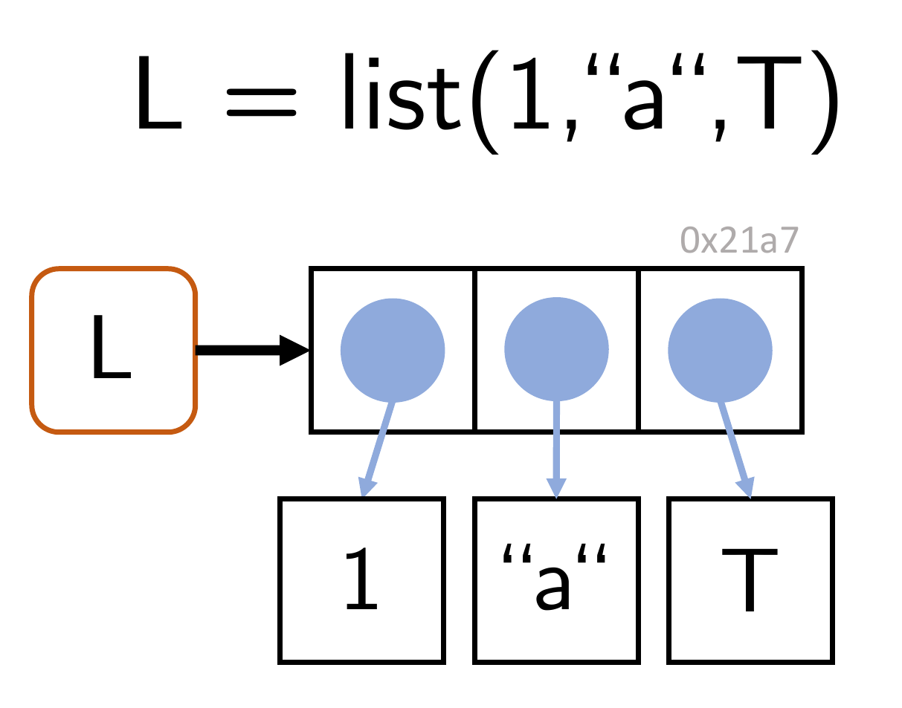
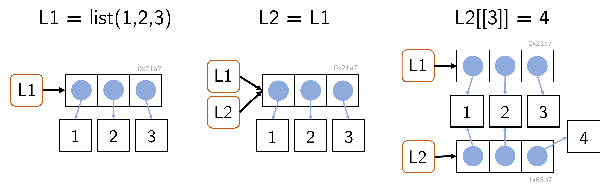
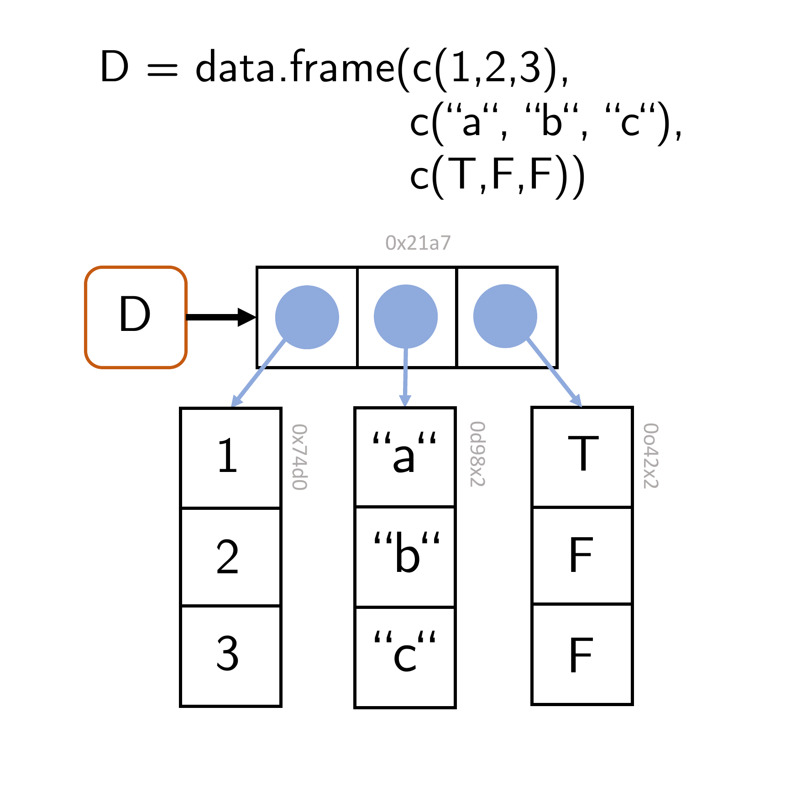
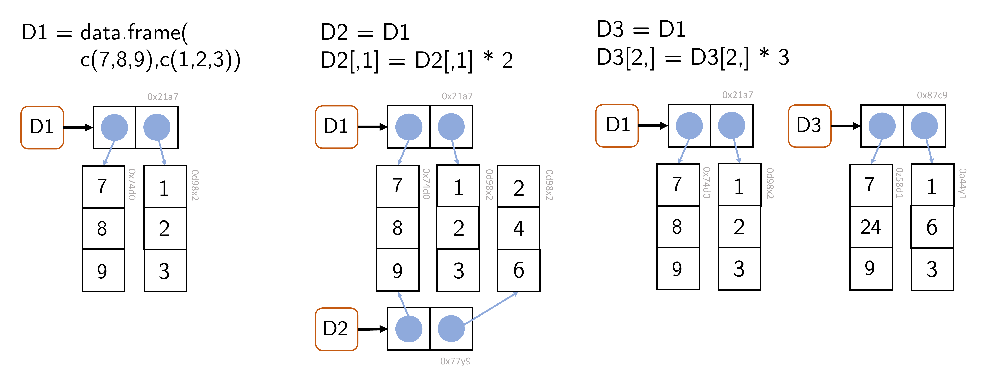

[[1]]
[1] 1 4 5
[[2]]
[,1] [,2] [,3] [,4]
[1,] 1 3 5 7
[2,] 2 4 6 8
[[3]]
function (x) .Primitive("exp")16 Lists, dataframes, and tibbles
16.1 Lists
R lists are ordered sequences of R objects. Lists are called a recursive data type because they can bundle objects of different data types, including lists themselves. Although the intuitive view that lists “contain” objects is natural, lists de facto do not “contain” objects, but only the references to the corresponding objects in memory (Figure 16.1). Lists are an essential building block of R dataframes.

Generation
Lists can be generated by directly concatenating the list elements with the function list().
In particular, lists themselves can also be elements of lists, which motivates their designation as a recursive data type.
The function c(), familiar from R vectors, can also be used to concatenate several lists.
Characterization
The data type of lists is list:
length() returns the number of list elements at the top list level; the element contents are therefore ignored:
[1] 3The dimension, number of rows, and number of columns of lists are NULL:
Indexing
When indexing lists, one must note that lists can be indexed in two different ways. Single square brackets [ ] index list elements as lists:
[[1]]
[1] 1 2 3[1] "list"Double square brackets [[ ]] index the contents of list elements:
These conventions must also be observed when replacing list contents. For example, it is not possible to change the first list element with the expression L[1] = c(1,2,3), because the vector c(1,2,3) is not a list:
Indexing
The principles of list indexing are analogous to those of vector indexing. Vectors of positive numbers address the corresponding elements:
[[1]]
[1] 1 2 3
[[2]]
[1] 3.141593Vectors of negative numbers address the elements complementary to their values:
Logical vectors address elements with index TRUE:
[[1]]
[1] 1 2 3
[[2]]
[1] "a"For non-numerical addressing, list elements can also be given names. This is possible after the generation of a list with the names() function:
$Frodo
[1] 1 2
$Sam
[1] TRUEIt is likewise possible to assign the names of the list elements directly during the generation of the list:
Both list elements and list-element contents can then be addressed with their names:
$frodo
[1] 1 2 3[1] "list"[1] 1 2 3[1] "character"In particular, list-element contents can also be indexed with the $ operator and their name. In the context of dataframes, this is the most common kind of list indexing:
[1] 1 2 3[1] "integer"[1] "a"[1] "character"[1] "b"[1] "character"Arithmetic
General list arithmetic is not defined, because list-element contents can be of different data types for which unary or binary operations are not defined:
Error in `L1 + L2`:
! nicht-numerisches Argument für binären OperatorIf, however, the contents of list elements are of a common data type for which certain binary operations are defined, then they can also be linked, for example arithmetically:
Copy-on-modify
As with vectors, the copy-on-modify principle applies to lists. Specifically, for lists, so-called shallow copies are generated when a list is modified. In this process, only the list object itself is copied and receives a new address in memory, but not the objects bound by the list, which remain at the same addresses in memory. lobstr::ref() makes it possible to trace this behavior.
█ [1:0x22849b32cd8] <list>
├─[2:0x2284c35b158] <dbl>
├─[3:0x2284c372ea8] <dbl>
└─[4:0x2284c372ce8] <dbl> █ [1:0x22849b32cd8] <list>
├─[2:0x2284c35b158] <dbl>
├─[3:0x2284c372ea8] <dbl>
└─[4:0x2284c372ce8] <dbl> █ [1:0x2284c3285f8] <list>
├─[2:0x2284c35b158] <dbl>
├─[3:0x2284c372ea8] <dbl>
└─[4:0x2284c3504d0] <dbl> Apparently, the assignment L2 = L1 initially changes nothing about the memory addresses to which L1 and L2 as well as their elements refer. The modification of the content of the third list element of L2 by L2[[3]] = 4, however, then changes the address of the list object in memory because a copy of the list object is generated. At the same time, according to the shallow-copy principle, the addresses of the first two contents of L2 do not change. Figure 16.2 visualizes these principles with an example.

L2 = L1 for a list L1 and of the modification of an element of L2.
16.2 Dataframes
R dataframes are the central data structure in R. Dataframes are best imagined as tables whose columns have names. Technically, a dataframe is a list whose elements are vectors of the same length. The list elements correspond to the columns of a table, and the vector elements at the same position correspond to the rows of a table.

Generation
Dataframes are generated with the function data.frame(). The column names and their vector-valued contents are specified as arguments of the function:
x y z
1 a 1 TRUE
2 b 2 TRUE
3 c 3 FALSE
4 d 4 TRUEThe columns of the dataframe must have the same length; otherwise a dataframe is not defined:
Error in `data.frame()`:
! Argumente implizieren unterschiedliche Anzahl Zeilen: 4, 3The columns of a dataframe can evidently be of different data types; this is, of course, congruent with the character of R lists.
Characterization
The functions names() and colnames() can be used to output the names of the columns of a dataframe, and the function rownames() can be used to output its row names. By default, the row names of a dataframe are the integers 1,2,…,n:
[1] "age" "height" "weight"[1] "age" "height" "weight"[1] "1" "2" "3" "4"Furthermore, a dataframe is characterized by its number of rows and columns. These can be output with the functions nrow() and ncol(), respectively. For dataframes, as for lists, the function length() returns the number of list entries; for dataframes this correspondingly means the number of columns.
[1] 4[1] 3[1] 3A helpful function for characterizing a dataframe is the function str(), which displays essential aspects of a dataframe in compact form. str() stands for structure and denotes the columns of the dataframe as variables and row entries as observations:
Attributes
Technically, dataframes are lists with attributes for (column) names and row.names. Dataframes are of class “data.frame”:
Indexing
Dataframes can be indexed both like matrices and like lists. The indexing principles correspond to those of vectors. The following example first shows how a dataframe is indexed with single brackets in the sense of a list. The corresponding list element is then itself a dataframe for dataframes:
[1] "data.frame" x
1 a
2 b
3 c
4 d[1] "data.frame"Furthermore, dataframes can be indexed like lists with double brackets. This addresses the contents of a list element:
[1] "a" "b" "c" "d"[1] "character"The typical indexing of a dataframe uses the $ indexing familiar from lists, which addresses the content of the corresponding dataframe column:
[1] 1 2 3 4[1] "integer"If one is interested in specific contents of the dataframe in specific rows and columns, the principles of matrix indexing are useful, as the following example shows:
Copy-on-modify
For optimal use of memory, the copy-on-modify principles for lists also apply to dataframes. Furthermore, the modification of a column leads to the copy of the corresponding column, whereas the modification of a row results in the copy of the entire dataframe.

16.3 Tibbles
In addition to R dataframes, tibbles (diminutive for tables) have become widespread in the last ten years as part of the tidyverse package. Tibbles are a more modern, technically improved form of dataframes and show how R has been extended for data science tasks beyond the application of classical linear models. To use tibbles, the tidyverse package must be installed and the tibble code must be loaded:
By and large, tibbles correspond to dataframes. As with dataframes, tibbles are lists of vector references, where the vectors again have the same length and represent the named columns of a table. Tibbles can be generated with the function tibble(). The display in the R terminal is optimized compared with dataframes, as the following example shows:
Warning: Paket 'tibble' wurde unter R Version 4.5.3 erstellt# A tibble: 3 × 3
x y z
<chr> <dbl> <lgl>
1 a 1 TRUE
2 c 2 FALSE
3 d 3 FALSE$class
[1] "tbl_df" "tbl" "data.frame"
$row.names
[1] 1 2 3
$names
[1] "x" "y" "z"16.3.1 Tibbles vs. dataframes
Tibbles were introduced in 2016 as part of the tidyverse package to compensate for perceived weaknesses of R dataframes. These included, among other things, that the function data.frame() automatically converted character vectors into the R data type factor. Since an R revision from 2019, however, this is no longer the case, as the following example shows:
'data.frame': 3 obs. of 2 variables:
$ x: int 1 2 3
$ y: chr "a" "b" "c"By default, data.frame() still converts inadmissible column names such as a number (1) into legal column names (X1). If one does not want this, however, one can turn off this behavior by setting the argument check.names.
[1] "X1"[1] "1"As seen in Chapter 14, R tends to generate data itself through recycling when data types have unsuitable lengths, which can easily lead to errors. Thus, for example, the function data.frame() recycles vectors when generating a dataframe if one of them is an integer multiple of the other:
x y
1 1 3
2 2 4
3 1 5
4 2 6By contrast, tibble() is more precise here and issues an error in the case above:
Error in `tibble()`:
! Tibble columns must have compatible sizes.
• Size 2: Existing data.
• Size 4: Column `y`.
ℹ Only values of size one are recycled.Vectors of length 1, however, are also recycled by tibble():
# A tibble: 3 × 2
x y
<int> <dbl>
1 1 3
2 2 3
3 3 3Dataframes are sometimes inconsistent with respect to the data types they return. As the example below shows, indexing a dataframe column by its name yields a dataframe, whereas indexing the same column by its name in matrix indexing yields a vector:
'data.frame': 3 obs. of 1 variable:
$ x: int 1 2 3 int [1:3] 1 2 3Tibbles are more consistent in this respect:
tibble [3 × 1] (S3: tbl_df/tbl/data.frame)
$ x: int [1:3] 1 2 3tibble [3 × 1] (S3: tbl_df/tbl/data.frame)
$ x: int [1:3] 1 2 3An additional feature of tibbles compared with dataframes is that the function tibble() allows column names to be referenced already during the generation of a tibble, which is not possible with dataframes.
Error:
! Objekt 'x' nicht gefundenIn summary, tibbles can be said to function less flexibly and therefore more precisely than dataframes in some respects. In general, tibbles behave more consistently than dataframes in tidyverse contexts. However, as seen above, the differences between dataframes and tibbles are rather subtle, so that efficient handling of dataframes also enables efficient handling of tibbles. Since not all R projects use the packages of the tidyverse, dataframes will probably remain the standard data structure for tabular data in R in the future.